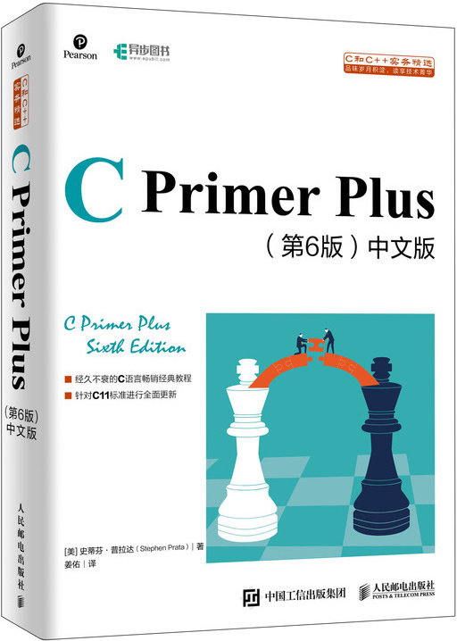

首页 > 书籍下载
《C Primer Plus(第6版)》中文版PDF下载（高清完整版）
|  | 作者：[美]史蒂芬·普拉达（Stephen Prata） |
| 译者：姜佑 | |
| 出版时间：2019年11月 | |
| 出版社：人民邮电出版社 | |
| 书号ISBN：9787115521637 | |
| 总页数：541 |
这是一本C语言经典书籍，是很多程序员的启蒙读物，也被技术大牛当做案头常备的工具书。
这里提供的是《C Primer Plus》第六版的高清 PDF 下载，内容完整，附带目录标签。
《C Primer Plus》专为零基础读者编写，目前经历了6次改版，成为C语言学习的好书。它的中文版累计发行超过 80W 册，很多新手通过自学，已在各大技术公司担任要职。
最新的第六版 PDF 针对 C89、C99、C11 这些标准进行了更新升级。
《C Primer Plus》在技术细节、技术广度、深度，以及讲解方式等是针对自学用户设计的，所以敬请放心大胆地拿起这本书来自学成才吧。本书特点：
- 详细完整地讨论了C语言的基础特性和附加特性；
- 清晰解释了使用C语言不同部分的时机，以及原因；
- 通过简洁、简单的示例加强读者的动手练习，以帮助一次理解一两个概念；
- 囊括了数百个实用的代码示例；
- 每章未尾的复习题和编程练习可以检测你的理解情况；
- 涵盖了C泛型编程，以提供较大的灵活性。
书籍目录
- 第1章 初识C语言 1
- 1.1 C语言的起源 1
- 1.2 选择C语言的理由 1
- 1.3 C语言的应用范围 3
- 1.4 计算机能做什么 4
- 1.5 高级计算机语言和编译器 4
- 1.6 语言标准 5
- 1.7 使用C语言的7个步骤 6
- 1.8 编程机制 9
- 1.9 本书的组织结构 14
- 1.10 本书的约定 15
- 第2章 C语言概述 17
- 2.1 简单的C程序示例 17
- 2.2 示例解释 18
- 2.3 简单程序的结构 24
- 2.4 提高程序可读性的技巧 25
- 2.5 进一步使用C 26
- 2.6 多个函数 27
- 2.7 调试程序 28
- 2.8 关键字和保留标识符 31
- 2.9 关键概念 31
- 2.10 本章小结 31
- 2.11 复习题 32
- 2.12 编程练习 33
- 第3章 数据和C 34
- 3.1 示例程序 34
- 3.2 变量与常量数据 36
- 3.3 数据：数据类型关键字 36
- 3.4 C语言基本数据类型 38
- 3.5 使用数据类型 55
- 3.6 参数和陷阱 55
- 3.7 转义序列示例 56
- 3.8 关键概念 58
- 3.9 本章小结 58
- 3.10 复习题 58
- 3.11 编程练习 60
- 第4章 字符串和格式化输入/输出 61
- 4.1 前导程序 61
- 4.2 字符串简介 62
- 4.3 常量和C预处理器 65
- 4.4 printf()和scanf() 69
- 4.5 关键概念 84
- 4.6 本章小结 85
- 4.7 复习题 85
- 4.8 编程练习 87
- 第5章 运算符、表达式和语句 88
- 5.1 循环简介 88
- 5.2 基本运算符 90
- 5.3 其他运算符 96
- 5.4 表达式和语句 102
- 5.5 类型转换 106
- 5.6 带参数的函数 109
- 5.7 示例程序 110
- 5.8 关键概念 111
- 5.9 本章小结 112
- 5.10 复习题 112
- 5.11 编程练习 114
- 第6章 C控制语句：循环 116
- 6.1 再探while循环 116
- 6.2 while语句 118
- 6.3 用关系运算符和表达式比较大小 121
- 6.4 不确定循环和计数循环 127
- 6.5 for循环 128
- 6.6 其他赋值运算符： =、-=、*=、/=、%= 132
- 6.7 逗号运算符 133
- 6.8 出口条件循环：do while 136
- 6.9 如何选择循环 138
- 6.10 嵌套循环 138
- 6.11 数组简介 140
- 6.12 使用函数返回值的循环示例 142
- 6.13 关键概念 145
- 6.14 本章小结 145
- 6.15 复习题 146
- 6.16 编程练习 149
- 第7章 C控制语句：分支和跳转 151
- 7.1 if语句 151
- 7.2 if else语句 152
- 7.3 逻辑运算符 162
- 7.4 一个统计单词的程序 165
- 7.5 条件运算符： : 168
- 7.6 循环辅助：continue和break 169
- 7.7 多重选择：switch和break 173
- 7.8 goto语句 178
- 7.9 关键概念 181
- 7.10 本章小结 181
- 7.11 复习题 181
- 7.12 编程练习 184
- 第8章 字符输入/输出和输入验证 186
- 8.1 单字符I/O：getchar()和putchar() 186
- 8.2 缓冲区 187
- 8.3 结束键盘输入 188
- 8.4 重定向和文件 191
- 8.5 创建更友好的用户界面 194
- 8.6 输入验证 198
- 8.7 菜单浏览 202
- 8.8 关键概念 206
- 8.9 本章小结 206
- 8.10 复习题 207
- 8.11 编程练习 208
- 第9章 函数 209
- 9.1 复习函数 209
- 9.2 ANSI C函数原型 218
- 9.3 递归 220
- 9.4 编译多源代码文件的程序 226
- 9.5 查找地址：&运算符 229
- 9.6 更改主调函数中的变量 230
- 9.7 指针简介 231
- 9.8 关键概念 236
- 9.9 本章小结 236
- 9.10 复习题 236
- 9.11 编程练习 237
- 第10章 数组和指针 238
- 10.1 数组 238
- 10.2 多维数组 244
- 10.3 指针和数组 248
- 10.4 函数、数组和指针 250
- 10.5 指针操作 253
- 10.6 保护数组中的数据 256
- 10.7 指针和多维数组 259
- 10.8 变长数组（VLA） 266
- 10.9 复合字面量 269
- 10.10 关键概念 270
- 10.11 本章小结 271
- 10.12 复习题 271
- 10.13 编程练习 273
- 第11章 字符串和字符串函数 275
- 11.1 表示字符串和字符串I/O 275
- 11.2 字符串输入 282
- 11.3 字符串输出 289
- 11.4 自定义输入/输出函数 291
- 11.5 字符串函数 293
- 11.6 字符串示例：字符串排序 307
- 11.7 ctype.h字符函数和字符串 310
- 11.8 命令行参数 311
- 11.9 把字符串转换为数字 313
- 11.10 关键概念 315
- 11.11 本章小结 315
- 11.12 复习题 316
- 11.13 编程练习 318
- 第12章 存储类别、链接和内存管理 320
- 12.1 存储类别 320
- 12.2 随机数函数和静态变量 334
- 12.3 掷骰子 337
- 12.4 分配内存：malloc()和free() 340
- 12.5 ANSI C类型限定符 346
- 12.6 关键概念 349
- 12.7 本章小结 350
- 12.8 复习题 350
- 12.9 编程练习 352
- 第13章 文件输入/输出 354
- 13.1 与文件进行通信 354
- 13.2 标准I/O 356
- 13.3 一个简单的文件压缩程序 360
- 13.4 文件I/O：fprintf()、fscanf()、fgets()和fputs() 361
- 13.5 随机访问：fseek()和ftell() 363
- 13.6 标准I/O的机理 366
- 13.7 其他标准I/O函数 366
- 13.8 关键概念 373
- 13.9 本章小结 373
- 13.10 复习题 374
- 13.11 编程练习 375
- 第14章 结构和其他数据形式 377
- 14.1 示例问题：创建图书目录 377
- 14.2 建立结构声明 378
- 14.3 定义结构变量 379
- 14.4 结构数组 381
- 14.5 嵌套结构 384
- 14.6 指向结构的指针 386
- 14.7 向函数传递结构的信息 387
- 14.8 把结构内容保存到文件中 401
- 14.9 链式结构 405
- 14.10 联合简介 405
- 14.11 枚举类型 408
- 14.12 typedef简介 411
- 14.13 其他复杂的声明 412
- 14.14 函数和指针 413
- 14.15 关键概念 418
- 14.16 本章小结 418
- 14.17 复习题 419
- 14.18 编程练习 421
- 第15章 位操作 423
- 15.1 二进制数、位和字节 423
- 15.2 其他进制数 425
- 15.3 C按位运算符 426
- 15.4 位字段 433
- 15.5 对齐特性（C11） 442
- 15.6 关键概念 443
- 15.7 本章小结 443
- 15.8 复习题 444
- 15.9 编程练习 445
- 第16章 C预处理器和C库 447
- 16.1 翻译程序的第 一步 447
- 16.2 明示常量：#define 448
- 16.3 在#define中使用参数 451
- 16.4 宏和函数的选择 454
- 16.5 文件包含：#include 455
- 16.6 其他指令 458
- 16.7 内联函数（C99） 465
- 16.8 _Noreturn函数（C11） 467
- 16.9 C库 467
- 16.10 数学库 469
- 16.11 通用工具库 472
- 16.12 断言库 477
- 第17章 高级数据表示 486
- 17.1 研究数据表示 486
- 17.2 从数组到链表 488
- 17.3 抽象数据类型（ADT） 494
- 17.4 队列ADT 505
- 17.5 用队列进行模拟 514
- 17.6 链表和数组 518
- 17.7 二叉查找树 521
- 17.8 其他说明 539
- 17.9 关键概念 540
- 17.10 本章小结 540
- 17.11 复习题 540
- 17.12 编程练习 541
书籍下载
一键登录，免费下载完整版 PDF，文件名称：《C Primer Plus(第6版)》中文版.pdf